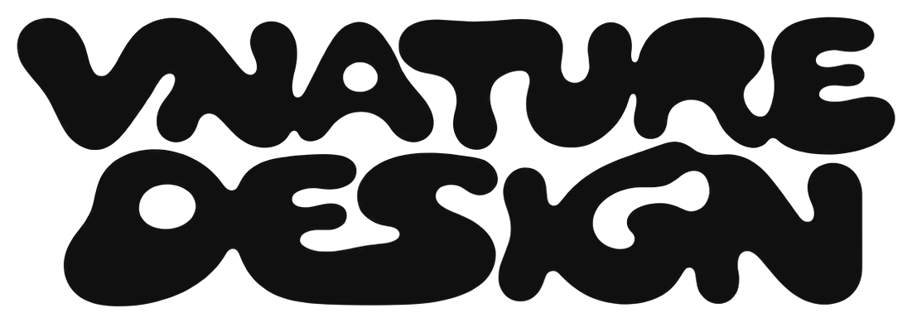

Input
Изображения, GIF и видео становятся единым типом входных данных.

контактыProduct / Creative development / WebGL
Экспериментальный visual lab, в котором изображение или видео превращается в разные визуальные системы — от ASCII и DOTS до TRACK, 3D и RASTER.
Интерфейс не маскирует инструмент: пользователь загружает исходник, управляет системой параметров, сразу видит результат и экспортирует его без разрыва между дизайном и рендером.
Здесь интерфейс — часть самого визуального инструмента: настройка, превью и экспорт должны ощущаться как один непрерывный процесс.
Изображения, GIF и видео становятся единым типом входных данных.
Каждый режим — отдельная визуальная система, а не просто фильтр поверх исходника.
Интерактив и WebGL дают быстрый отклик без ощущения тяжёлого редактора.
Результат должен сохранять длительность, четкость и характер превью при выводе в файл.
XTAL строится как creative software, а не коллекция эффектов: режимы, интерактив и экспорт объединены общей продуктовой логикой.